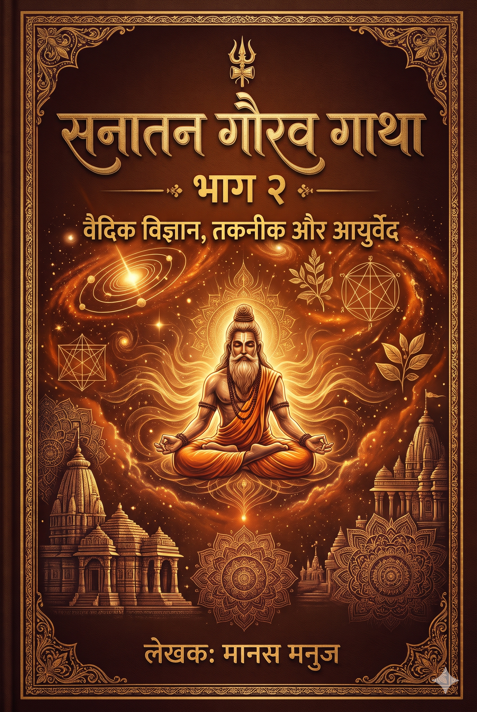

आगामी पुस्तक श्रृंखला • 3 भाग | 18 खंड | 108 अध्याय
सनातन गौरव गाथा
विज्ञान और अध्यात्म का महासंगम
तीन स्वतंत्र भागों, 18 खंडों और 108 अध्यायों में नियोजित यह महाग्रंथ-श्रृंखला सनातन ज्ञान परंपरा, प्राचीन भारतीय विज्ञान, वास्तुकला, आयुर्वेद, ऐतिहासिक सत्य और उच्च योग के वैज्ञानिक आधार को आधुनिक दृष्टिकोण से प्रस्तुत करती है।
लेखन एवं प्रकाशन तैयारी प्रगति: 75%
प्रकाशन की अग्रिम सूचना के लिए पंजीकरण करें
आरंभिक प्रकरण: महा-मंगलाचरण एवं संकल्प
प्रकाशन: शीघ्र घोषित